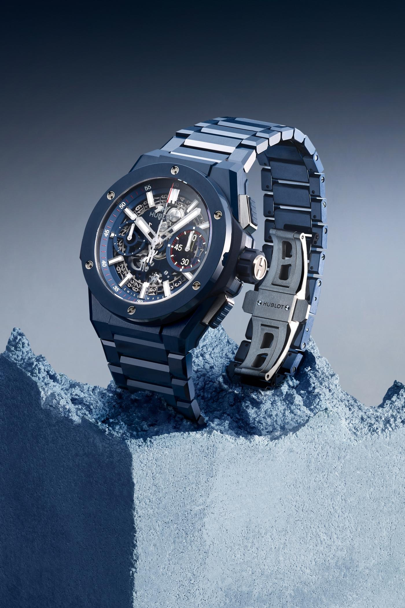

Your home for exclusive watches from the most prominent watch brands in the world.
Rolex, a Swiss watch manufacture headquartered in Geneva, is recognized the world over for its expertise and the quality of its products. Its Oyster Perpetual and Cellini watches, all certified as Superlative Chronometers for their precision, performance and reliability, are symbols of excellence, elegance and prestige. The word “Perpetual” is inscribed on every Rolex Oyster. But more than just a word on a dial, it is a philosophy that embodies the company’s vision and values. Hans Wilsdorf, the founder of the company, instilled a notion of perpetual excellence that would drive the company forward.
Patek Philippe SA is a Swiss luxury watch and clock manufacturer, located in the Canton of Geneva and the Vallée de Joux. Established in 1839, it is named after two of its founders, Antoni Patek and Adrien Philippe. Since 1932, the company has been owned by the Stern family in Switzerland and remains the last family-owned independent watch manufacturer in Geneva. Patek Philippe is one of the oldest watch manufacturers in the world with an uninterrupted watchmaking history since its founding. It designs and manufactures timepieces as well as movements, including some of the most complicated mechanical watches. The company maintains over 400 retail locations globally and over a dozen distribution centers across Asia, Europe, North America, and Oceania. In 2001, it opened the Patek Philippe Museum in Geneva.
See all from Patek PhilippeAudemars Piguet Holding SA is a Swiss manufacturer of luxury mechanical watches and clocks, headquartered in Le Brassus, Switzerland. The company was founded by Jules Louis Audemars and Edward Auguste Piguet in the Vallée de Joux in 1875, acquiring the name Audemars Piguet & Cie in 1881. The company has been family-owned since its founding. Audemars Piguet is a highly regarded watch manufacturer. The company is best known for introducing the Royal Oak wristwatch in 1972, which helped the brand rise to prominence within the watchmaking industry. One of Audemars Piguet's early achievements was creating the world's first minute-repeating movement for wristwatches in 1892. In addition, the company developed the first skeleton watch in 1934 and has manufactured some of the thinnest watches in the world, such as the 1986 ultra-thin automatic tourbillon wristwatch (Calibre 2870).
See all from Audemars PiguetOmega SA is a Swiss luxury watchmaker based in Biel/Bienne, Switzerland. Founded by Louis Brandt in La Chaux-de-Fonds in 1848, the company formally operated as La Generale Watch Co. until incorporating the name Omega in 1903, becoming Louis Brandt et Frère-Omega Watch & Co. In 1984, the company officially changed its name to Omega SA, which is currently a subsidiary of the Swiss Swatch Group. Omega opened its museum to the public in Biel/Bienne in January 1984. Britain's Royal Flying Corps used Omega watches in 1917 for its combat units, as did the U.S. Army in 1918. Omega watches were the choice of NASA in 1969 for the Apollo 11 mission. In addition, Omega has been the official timekeeper of the Olympic Games since 1932. Omega is currently the timekeeper of the America's Cup yacht race and a main partner of the 2022 Winter Olympics.
See all from OmegaHublot is a Swiss luxury watchmaker founded in 1980 by Italian Carlo Crocco. The company operates as a wholly owned subsidiary of the French luxury conglomerate LVMH.
TAG Heuer S.A. is a Swiss luxury watchmaker that designs, manufactures and markets watches and fashion accessories, as well as eyewear and mobile phones manufactured under license by other companies and carrying the TAG Heuer brand name. The company began as Uhrenmanufaktur Heuer AG, founded in 1860 by Edouard Heuer in St-Imier, Switzerland. In 1985, TAG Group purchased a majority stake in the company, forming TAG Heuer. In 1999, French luxury goods conglomerate LVMH bought nearly 100 percent of the Swiss company. The name TAG Heuer combines the initials of "Techniques d'Avant Garde" and the founder's surname.
See all from Tag Heuer